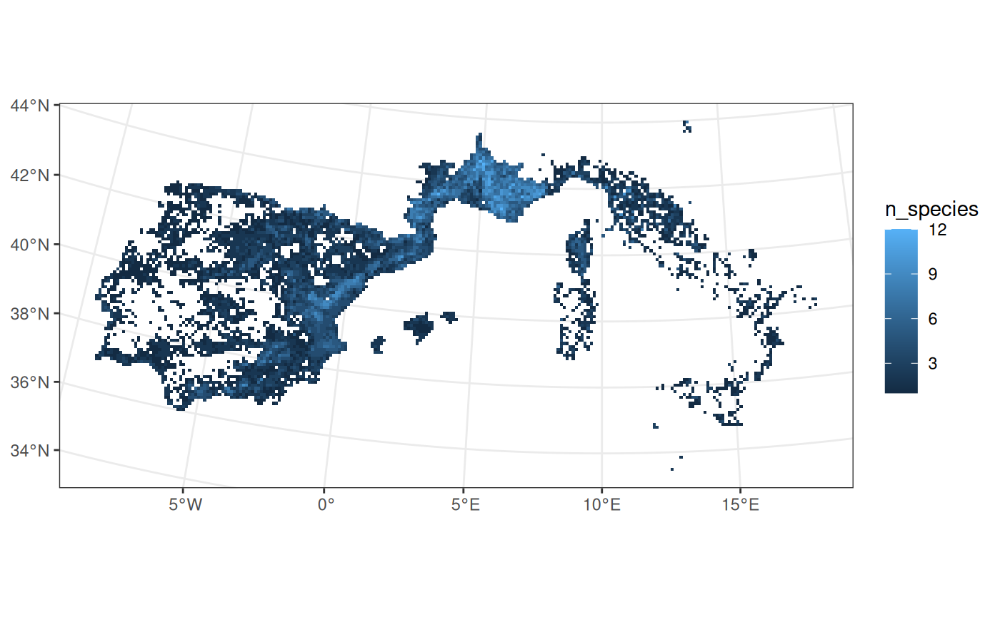
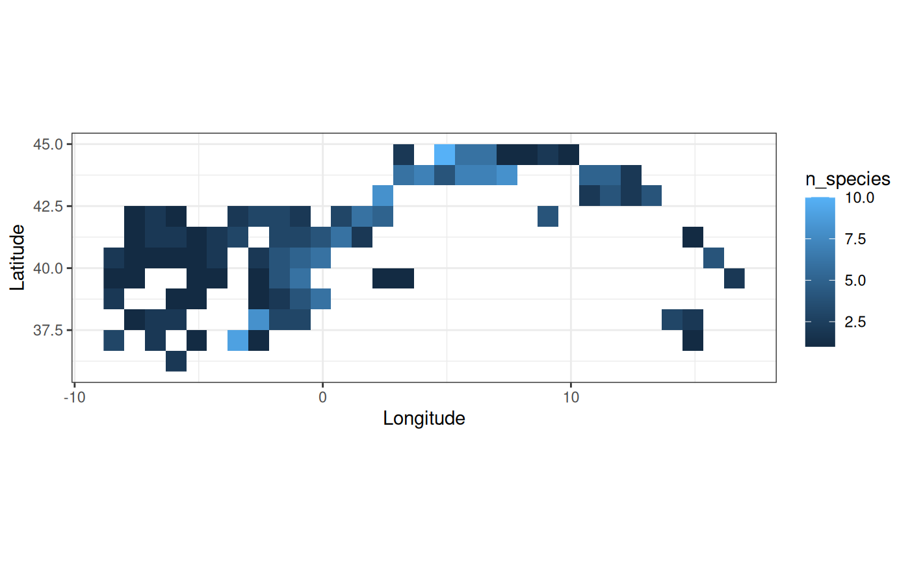
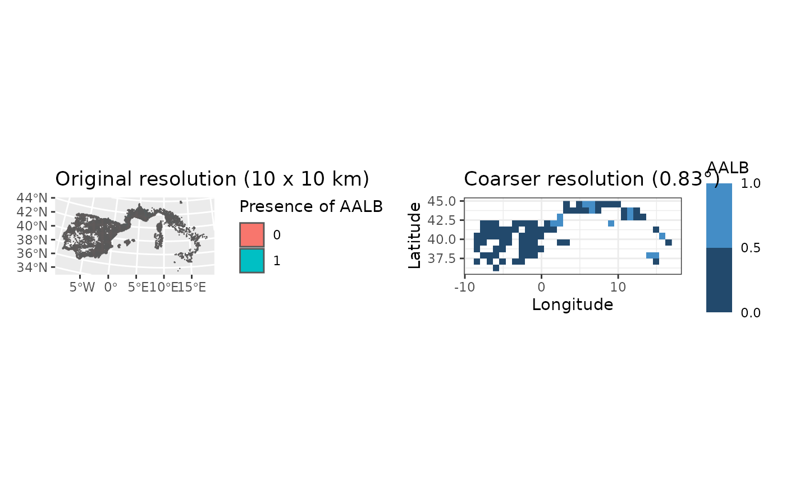

funbiogeo provides an easy way to upscale your site data
to a coarser resolution. The idea is that you have any type of data at
the site level (diversity metrics, environmental data, as well as
site-species data) that you would like to work or visualize at a coarser
scale. The aggregation process can look daunting at first and be quite
difficult to run. We explain in this vignette, how to do so through the
fb_aggregate_site_data() function. We’ll detail three use
cases: the first through aggregating arbitrary site-level data, the
second focused on aggregating the site x species object, and the last
aggregating functional diversity metrics.
Aggregating arbitrary site-data
Let’s import our site by locations object, which describes the geographical locations of sites.
data("site_locations")
site_locations
#> Simple feature collection with 1505 features and 1 field
#> Geometry type: POLYGON
#> Dimension: XY
#> Bounding box: xmin: -9.978179 ymin: 35.84736 xmax: 23.02182 ymax: 59.84736
#> Geodetic CRS: WGS 84
#> First 10 features:
#> site geom
#> 1 1 POLYGON ((5.521821 59.84736...
#> 2 2 POLYGON ((6.521821 59.84736...
#> 3 3 POLYGON ((7.021821 59.84736...
#> 4 4 POLYGON ((7.521821 59.84736...
#> 5 5 POLYGON ((8.021821 59.84736...
#> 6 6 POLYGON ((8.521821 59.84736...
#> 7 7 POLYGON ((9.021821 59.84736...
#> 8 8 POLYGON ((9.521821 59.84736...
#> 9 9 POLYGON ((10.02182 59.84736...
#> 10 10 POLYGON ((10.52182 59.84736...These sites are a collection of regular spatial polygons at a resolution of 0.5° over Western Europe.
For each site, we want to compute the species richness.
# Import site x species data ----
data("site_species")
# Compute species richness ----
species_richness <- fb_count_species_by_site(site_species)
head(species_richness)
#> site n_species coverage
#> 1 980 68 0.4563758
#> 2 1022 68 0.4563758
#> 3 931 67 0.4496644
#> 4 975 67 0.4496644
#> 5 933 66 0.4429530
#> 6 966 66 0.4429530Before going any further let’s map these original values with the
function fb_map_site_data().
fb_map_site_data(site_locations, species_richness, "n_species")
Now, let’s say that our next analyses require to work at a coarser
resolution. We need to aggregate site data on a new spatial grid (object
SpatRaster from the terra
package). Let’s import this coarser raster.
# Import study area grid ----
coarser_grid <- system.file("extdata", "grid_area.tif", package = "funbiogeo")
coarser_grid <- terra::rast(coarser_grid)
coarser_grid
#> class : SpatRaster
#> dimensions : 29, 41, 1 (nrow, ncol, nlyr)
#> resolution : 0.8333333, 0.8333333 (x, y)
#> extent : -10.5, 23.66667, 35.83333, 60 (xmin, xmax, ymin, ymax)
#> coord. ref. : lon/lat WGS 84 (EPSG:4326)
#> source : grid_area.tif
#> name : value
#> min value : 1
#> max value : 1We will aggregate the site data (resolution of 0.5°) to this new
coarser raster (resolution of 0.83°) with the function
fb_aggregate_site_data(). This function requires the
following arguments:
-
site_locations: the site x locations object -
site_data: amatrixordata.framecontaining values per sites to aggregate on the provided gridagg_grid. Can have one or several columns (variables to aggregate). The first column must contain sites names as provided in the example datasetsite_locations -
agg_grid: aSpatRasterobject (packageterra). A raster of one single layer, that defines the grid along which to aggregate -
fun: the function used to aggregate sites values when there are multiple sites in one cell
Let’s aggregate our species richness values on this grid.
# Upscale to grid ----
upscaled_richness <- fb_aggregate_site_data(
site_locations = site_locations,
site_data = species_richness[ , 1:2],
agg_grid = coarser_grid,
fun = mean
)
upscaled_richness
#> class : SpatRaster
#> dimensions : 29, 41, 1 (nrow, ncol, nlyr)
#> resolution : 0.8333333, 0.8333333 (x, y)
#> extent : -10.5, 23.66667, 35.83333, 60 (xmin, xmax, ymin, ymax)
#> coord. ref. : lon/lat WGS 84 (EPSG:4326)
#> source(s) : memory
#> varname : grid_area
#> name : n_species
#> min value : 3
#> max value : 68The result of this function is a SpatRaster where the
cells contain the average values of species richness aggregated over the
coarser grid.
fb_map_raster(upscaled_richness)
Aggregating site-species data to a coarser spatial scale
Now that we’ve learned how to aggregate arbitrary data at the site
scale over a spatial scale. We’re going to use our provided example
named site_species on Western European mammals at a
resolution of 0.5° to get new sites from a grid with pixels of 0.83° of
resolution.
As shown in the part above, we’ll need three objects:
site_species, which describes the species present across
sites; site_locations, which gives the spatial locations of
sites; and agg_grid which is a SpatRaster
object defining the coarser grid.
We’ll use the previously defined object to run our example. To
aggregate the presence-absence of species within each pixel of the new
grid, we’ll use the max() function (as the fun
argument). As such, coarser pixels which contains a mix of presence and
absence of certain species, we’ll be considered as having the species
present.
site_species_agg <- fb_aggregate_site_data(
site_locations,
site_species,
agg_grid = coarser_grid,
fun = max
)The return object is a SpatRaster as well but can be
transformed easily in a data.frame to follow back with the regular
analyses provided in funbiogeo. The new object contains one
layer for each aggregated variable, i.e. here, one per species.
site_species_agg
#> class : SpatRaster
#> dimensions : 29, 41, 149 (nrow, ncol, nlyr)
#> resolution : 0.8333333, 0.8333333 (x, y)
#> extent : -10.5, 23.66667, 35.83333, 60 (xmin, xmax, ymin, ymax)
#> coord. ref. : lon/lat WGS 84 (EPSG:4326)
#> source(s) : memory
#> varnames : grid_area
#> grid_area
#> grid_area
#> ...
#> names : sp_001, sp_002, sp_003, sp_004, sp_005, sp_006, ...
#> min values : 0, 0, 0, 0, 0, 0, ...
#> max values : 1, 1, 1, 0, 1, 1, ...We can visualize both maps for a single species to see the difference:
library("ggplot2")
single_species <- merge(
site_locations, site_species[, 1:2], by = "site", all = TRUE
)
finer_map <- ggplot(single_species) +
geom_sf(aes(fill = as.factor(sp_001))) +
labs(fill = "Presence of sp_001", title = "Original resolution (0.5°)")
coarser_map <- fb_map_raster(site_species_agg[[1]]) +
scale_fill_binned(breaks = c(0, 0.5, 1)) +
labs(title = "Coarser resolution (0.83°)")
patchwork::wrap_plots(finer_map, coarser_map, nrow = 1)
Obtaining back a site x species data.frame
Now we obtained a raster of aggregated site-species presences.
However, the other functions of funbiogeo don’t play well
with raster data. They need data.frames to work well. We can do this
through the specific function as.data.frame() in
terra (make sure to check the dedicated help page that
specifies all the additional arguments with
?terra::as.data.frame).
# Use the 'cells = TRUE' argument to index results with a new cell column
# corresponding to the ID of the coarser grid pixels
site_species_agg_df <- terra::as.data.frame(site_species_agg, cells = TRUE)
site_species_agg_df[1:4, 1:4]
#> cell sp_001 sp_002 sp_003
#> 20 20 1 0 0
#> 21 21 1 0 0
#> 22 22 1 0 0
#> 23 23 1 0 0
colnames(site_species_agg_df)[1] <- "site"With this, we’re ready to reuse all of funbiogeo
functions to work on these coarser data. You can proceed similarly to
aggregate the ancillary site-related data, to use them in the rest of
the analyses.
Aggregating site-functional diversity data
Because funbiogeo focuses on the functional biogeography
workflow, we’ll explore in this section how to aggregate the results for
a functional biogeography function. First, we’ll show the example with
the CWM of body mass then we’ll show an example with the functional
diversity using the fundiversity package.
Coarser CWM of body mass
To compute the CWM we’ll use the internal function
fb_cwm().
site_cwm <- fb_cwm(site_species, species_traits[, 1:2])
#> Some species had NA trait values, removing them from CWM computation
head(site_cwm)
#> site trait cwm
#> 1 1 adult_body_mass 31974.15
#> 2 2 adult_body_mass 39911.51
#> 3 3 adult_body_mass 39912.54
#> 4 4 adult_body_mass 39912.54
#> 5 5 adult_body_mass 41389.44
#> 6 6 adult_body_mass 39912.37Now we can aggregate the CWM of body mass at coarser scale using
fb_aggregate_site_data() as done in the previous
section:
colnames(site_cwm)[3] <- "adult_body_mass"
upscaled_cwm <- fb_aggregate_site_data(
site_locations,
site_cwm[, c(1, 3)],
coarser_grid
)
upscaled_cwm
#> class : SpatRaster
#> dimensions : 29, 41, 1 (nrow, ncol, nlyr)
#> resolution : 0.8333333, 0.8333333 (x, y)
#> extent : -10.5, 23.66667, 35.83333, 60 (xmin, xmax, ymin, ymax)
#> coord. ref. : lon/lat WGS 84 (EPSG:4326)
#> source(s) : memory
#> varname : grid_area
#> name : adult_body_mass
#> min value : 27.83333
#> max value : 41389.43359We can then map the CWM using the fb_map_raster()
function:
fb_map_raster(upscaled_cwm) +
scale_fill_continuous(trans = "log10")Coarser FRic through fundiversity
In a similar fashion as in the introduction
vignette to funbiogeo in this section we’ll compute the
Functional Richness using two traits across our example dataset.
# Get all species for which we have both adult body mass and litter size
subset_traits <- species_traits[
, c("species", "adult_body_mass", "litter_size")
]
subset_traits <- subset(
subset_traits, !is.na(adult_body_mass) & !is.na(litter_size)
)
# Transform trait data
subset_traits[["adult_body_mass"]] <- as.numeric(
scale(log10(subset_traits[["adult_body_mass"]]))
)
subset_traits[["litter_size"]] <- as.numeric(
scale(subset_traits[["litter_size"]])
)
# Filter site for which we have trait information for than 80% of species
subset_site <- fb_filter_sites_by_trait_coverage(
site_species, subset_traits, 0.8
)
subset_site <- subset_site[, c("site", subset_traits$species)]
# Remove first column and convert in rownames
rownames(subset_traits) <- subset_traits[["species"]]
subset_traits <- subset_traits[, -1]
rownames(subset_site) <- subset_site[["site"]]
subset_site <- subset_site[, -1]
# Compute FRic
site_fric <- fundiversity::fd_fric(
subset_traits, subset_site
)
#> Warning in fundiversity::fd_fric(subset_traits, subset_site): Some sites had
#> less species than traits so returned FRic is 'NA'
head(site_fric)
#> site FRic
#> 1 1 8.502155
#> 2 2 8.502155
#> 3 3 8.502155
#> 4 4 8.502155
#> 5 5 8.502155
#> 6 6 8.502155We can now follow a similar upscaling process as in the previous sections
agg_fric <- fb_aggregate_site_data(site_locations, site_fric, coarser_grid)
fb_map_raster(agg_fric)